Stay Calm & Focused
Use mindfulness and relaxation techniques to manage emotions and stress.

Relaxation Techniques
-
Breathing Exercises
Focus on your breath. Inhale slowly for 4 seconds, hold for 4, then exhale slowly for 4. Repeat.
-
Meditation & Focus Practices
Find a quiet space, close your eyes, and focus on your breath to center your mind.
-
Journaling & Reflection
Take 10 minutes to write down your thoughts and reflect on the day’s events.